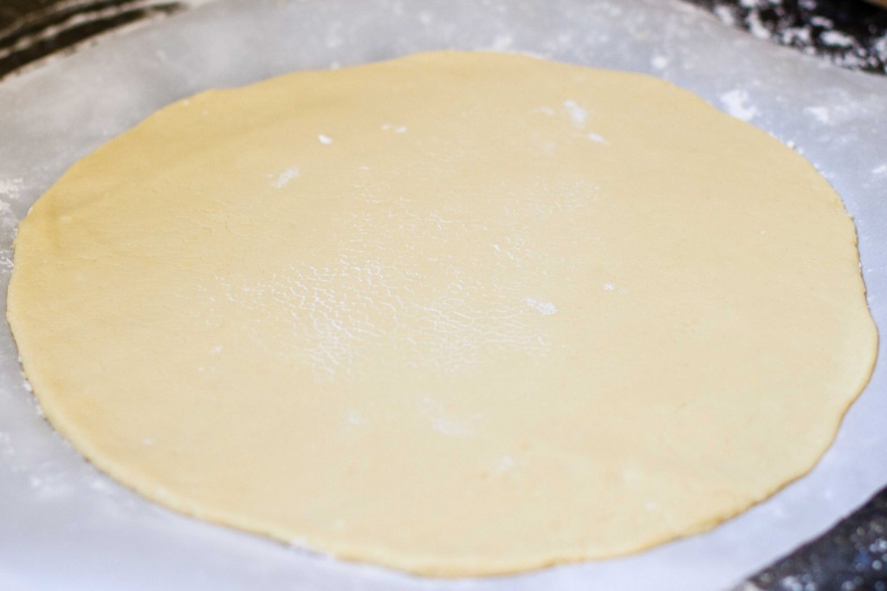
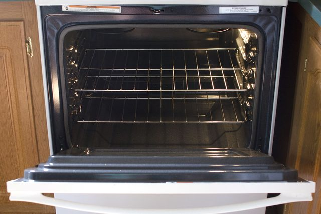

Preheat the oven to 500 degrees Fahrenheit with a rack in the upper third of the oven.
In a food processor, add the kale, pecans, lemon juice, garlic, salt and several twists of freshly ground black pepper. Turn on the food processor and drizzle in the oil. Process until the pesto reaches your desired consistency, stopping to scrape down the sides as necessary. Taste and add more lemon juice, salt, or pepper if necessary.
Roll the pizza dough on parchment paper for easy transfer to the oven. For best results, roll the dough out as thin as reasonably possible while maintaining an even surface level.
Top pizza with an even layer of pesto (you may end up with extra pesto). Sprinkle cheese over the top. Lastly, in a small bowl, toss 1 cup chopped kale with 1 teaspoon olive oil and a sprinkle of salt. Rub the oil into the kale so it's covered with a light, even layer. Distribute the kale evenly over the top of the pizza.
Transfer one pizza to the oven on a baking sheet. Bake until the crust is golden and the cheese on top is bubble (about 10 to 12 minutes on a baking sheet). If desired, top pizza with a light sprinkle of red pepper flakes. Slice and serve.
